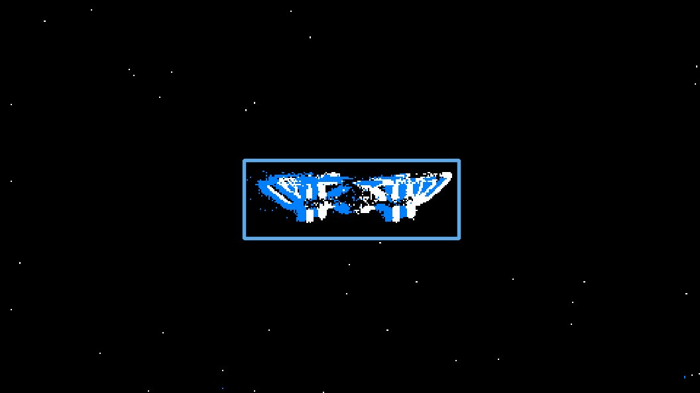
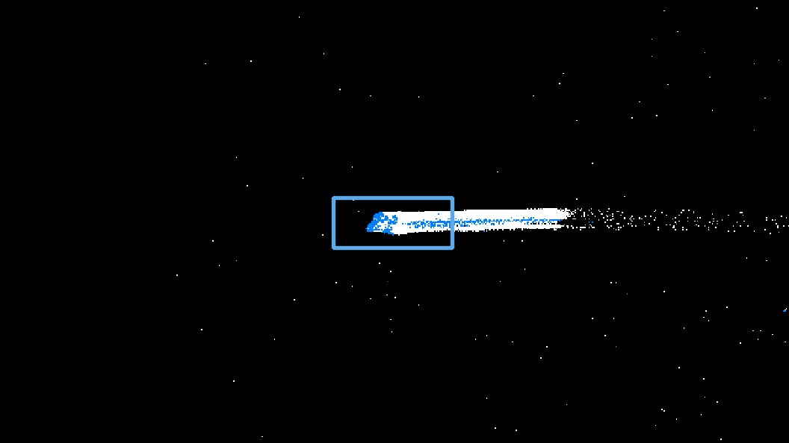
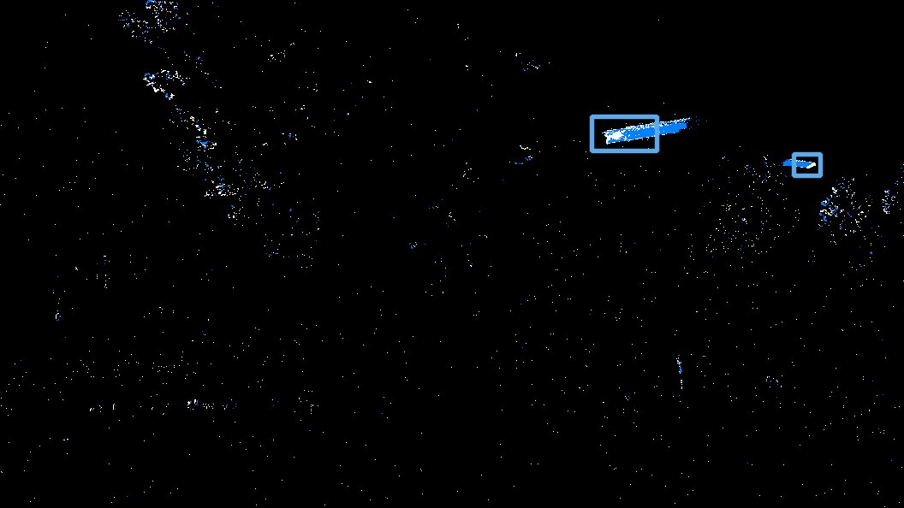
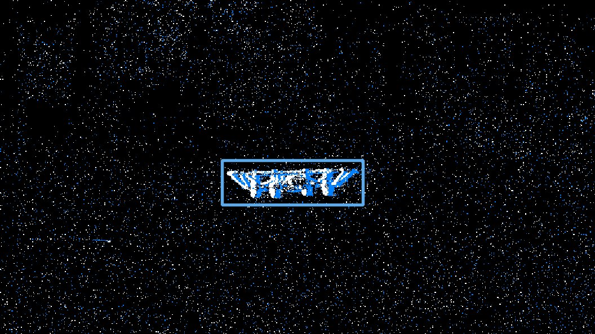
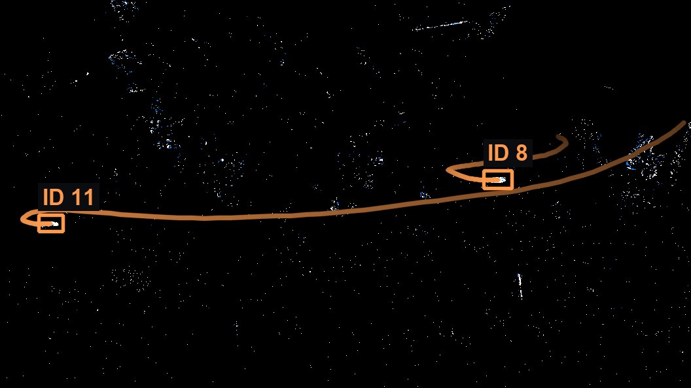
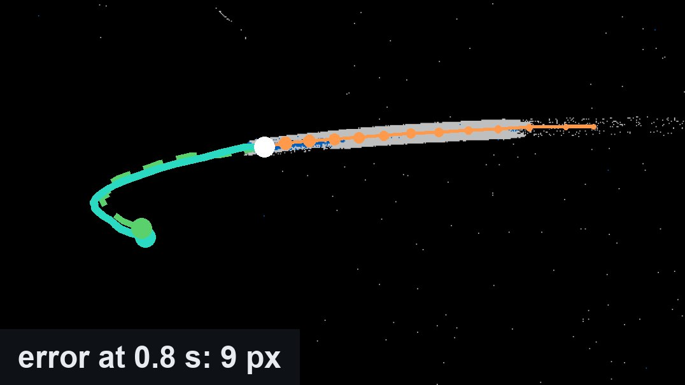

One detection transformer finds drones in event-camera data, keeps their identity and forecasts their next 0.8 seconds, in a single forward pass per frame.
Abstract
Small, fast drones stress frame cameras with motion blur, limited dynamic range and latency. Event cameras, which report per-pixel brightness changes with microsecond resolution, suit this regime. Acting on a drone takes three answers: where it is (detection), which drone it is over time (tracking), and where it will be a few hundred milliseconds later (forecasting). Event-based systems so far answer them with separate models, which recompute features and pass detection errors downstream.
ED-OFA answers all three with one model. It extends the RT-DETRv2 detector with an explicit past: the last boxes of each tracked drone enter the decoder as a query. The box predicted for that query is the drone's present position and keeps its identity, and a forecasting head decodes its state into the next 0.8 seconds, while standard queries find new drones in the same forward pass. Event frames at three durations, fused by cross-duration attention, keep both slow and fast drones visible. At inference the past comes from the model's own outputs, so training narrows this exposure-bias gap with missing and phantom pasts, time-correlated noise calibrated on closed-loop errors, negatives for drones that have just left the scene, and a closed-loop curriculum. On FRED, in closed loop and on every test frame, ED-OFA reaches 87.3 mAP50 and 78.1 MOTA; on the whole test set its error at 0.8 seconds is 44.7 pixels, against 81.0 for a Kalman filter given the same past.
Method
The three tasks describe one quantity: the trajectory of the drone. A detector conditioned on that trajectory also tracks and forecasts.
The past is a query
The last 12 boxes of each tracked drone, 0.4 s, become a decoder query through a small MLP. Its box keeps the drone's identity, and its decoder state feeds a forecasting head that predicts the next 24 boxes.
Three time windows
Every step is rendered over 33, 165 and 330 ms. A short window keeps a fast drone sharp, a long one gives a slow drone enough events; cross-duration attention weighs them at every location and scale.
Trained for its own past
At inference the past comes from the model itself. Training adds missing and phantom pasts, noise calibrated on closed-loop errors, negatives for drones that left, and a curriculum that swaps annotated pasts for the model's own rollouts.
Results
FRED canonical test set, every frame, including the 21% without drones. Closed loop: the past of each drone comes from the model's own tracks, never from the annotations.

Close drone
Fast drone
Two drones
Heavy event noiseDetection
| Method | mAP@50:95 | mAP@50 |
|---|---|---|
| RT-DETR | 39.0 | 82.1 |
| Faster R-CNN | 43.4 | 85.0 |
| YOLOv11 | 49.3 | 87.7 |
| AHM-NetRGB + events | 51.3 | 89.0 |
| ED-OFA | 43.8 | 87.3 |
Event input unless noted. Baselines from FRED (Magrini et al., ACM MM 2025) and AHM-Net (Niu et al., ICASSP 2026).

Tracking
| Method | MOTA | Recall | IDF1 |
|---|---|---|---|
| RT-DETR + ByteTrack | 51.3 | 72.8 | 45.1 |
| YOLOv11 + ByteTrack | 57.1 | 72.2 | 47.6 |
| Faster R-CNN + ByteTrack | 64.0 | 83.1 | 45.0 |
| ED-OFA | 78.1 | 86.7 | 39.8 |
Highest MOTA and recall; IDF1 is lower, as identities break more often. Baselines from FRED, event input.

- own past
- now
- forecast
- annotated future
Forecasting
| Method | ADE 0.4 / 0.8 s | FDE 0.4 / 0.8 s |
|---|---|---|
| Kalman filtersame windows and past | 11.4 / 32.3 | 25.0 / 81.0 |
| ED-OFAown past, closed loop | 7.9 / 18.8 | 14.8 / 44.7 |
Box-centre error in pixels at 1280×720, on all 47 test sequences (108,020 windows), with the Kalman noise tuned on them. Lower than the Kalman filter on 46 of the 47 sequences. The FRED baseline (CNN + Transformer on events, annotated past) reports 83.9 px at 0.8 s on its own test windows.
Baselines as published in their papers; evaluators differ.
Data
All results use the event stream of FRED, the Florence RGB-Event Drone dataset (Magrini et al., ACM MM 2025): 7 hours of synchronized RGB and event recordings at 1280×720, with boxes and identities at 30 FPS, five drone models, night, rain and insects.
BibTeX
@misc{cappelli2026edofa,
title = {{ED-OFA}: Event-based One-For-All Drone Detection, Tracking and Forecasting},
author = {Cappelli, Edoardo and Magrini, Gabriele and Becattini, Federico and Cultrera, Luca and Pala, Pietro},
year = {2026}
}